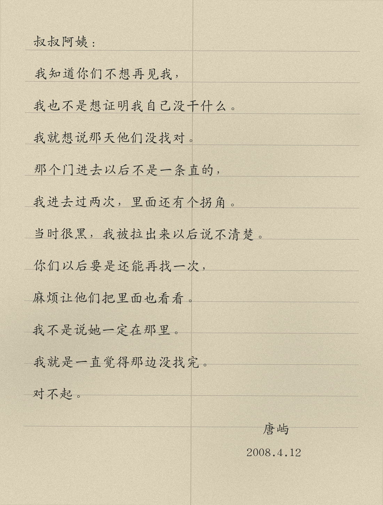

档案袋里一共七封信，最早一封寄于2008年，最后一封落款2018年。中间有几年没有来信，几封信的纸张和寄件地址也不一样。

2008：“我知道你们不想再见我，我也不是想证明我自己没干什么。我就想说那天他们没找对。那个门进去以后不是一条直的，我进去过两次，里面还有个拐角。”
2013：“高铭说03年动过排水那边。我记得那个拐角不是原来就有的，想不准了，你们要是还能查图，麻烦再看一次。”
2015：“我画的还是上次那张，入口进去先往里，不是到墙就没了。那晚我出来以后说不明白。”
2018：“如果以后那地方真拆了，能不能让施工的人从后面也看一下。我没有别的意思。”
唐屿2020年去世。最后一封信上的回信地址后来已经失效。